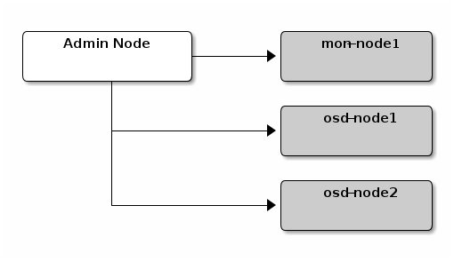

Notice
This document is for a development version of Ceph.
Manual Deployment
All Ceph clusters require at least one monitor, and at least as many OSDs as copies of an object stored on the cluster. Bootstrapping the initial monitor(s) is the first step in deploying a Ceph Storage Cluster. Monitor deployment also sets important criteria for the entire cluster, such as the number of replicas for pools, the number of placement groups per OSD, the heartbeat intervals, whether authentication is required, etc. Most of these values are set by default, so it’s useful to know about them when setting up your cluster for production.
We will set up a cluster with mon-node1 as the monitor node, and osd-node1 and
osd-node2 for OSD nodes.

Monitor Bootstrapping
Bootstrapping a monitor (a Ceph Storage Cluster, in theory) requires a number of things:
Unique Identifier: The
fsidis a unique identifier for the cluster, and stands for File System ID from the days when the Ceph Storage Cluster was principally for the Ceph File System. Ceph now supports native interfaces, block devices, and object storage gateway interfaces too, sofsidis a bit of a misnomer.Cluster Name: Ceph clusters have a cluster name, which is a simple string without spaces. The default cluster name is
ceph, but you may specify a different cluster name. Overriding the default cluster name is especially useful when you are working with multiple clusters and you need to clearly understand which cluster your are working with.For example, when you run multiple clusters in a multisite configuration, the cluster name (e.g.,
us-west,us-east) identifies the cluster for the current CLI session. Note: To identify the cluster name on the command line interface, specify the Ceph configuration file with the cluster name (e.g.,ceph.conf,us-west.conf,us-east.conf, etc.). Also see CLI usage (ceph --cluster {cluster-name}).Monitor Name: Each monitor instance within a cluster has a unique name. In common practice, the Ceph Monitor name is the host name (we recommend one Ceph Monitor per host, and no commingling of Ceph OSD Daemons with Ceph Monitors). You may retrieve the short hostname with
hostname -s.Monitor Map: Bootstrapping the initial monitor(s) requires you to generate a monitor map. The monitor map requires the
fsid, the cluster name (or uses the default), and at least one host name and its IP address.Monitor Keyring: Monitors communicate with each other via a secret key. You must generate a keyring with a monitor secret and provide it when bootstrapping the initial monitor(s).
Administrator Keyring: To use the
cephCLI tools, you must have aclient.adminuser. So you must generate the admin user and keyring, and you must also add theclient.adminuser to the monitor keyring.
The foregoing requirements do not imply the creation of a Ceph Configuration
file. However, as a best practice, we recommend creating a Ceph configuration
file and populating it with the fsid, the mon initial members and the
mon host settings.
You can get and set all of the monitor settings at runtime as well. However, a Ceph Configuration file may contain only those settings that override the default values. When you add settings to a Ceph configuration file, these settings override the default settings. Maintaining those settings in a Ceph configuration file makes it easier to maintain your cluster.
The procedure is as follows:
Log in to the initial monitor node(s):
ssh {hostname}
For example:
ssh mon-node1
Ensure you have a directory for the Ceph configuration file. By default, Ceph uses
/etc/ceph. When you installceph, the installer will create the/etc/cephdirectory automatically.ls /etc/ceph
Create a Ceph configuration file. By default, Ceph uses
ceph.conf, wherecephreflects the cluster name. Add a line containing “[global]” to the configuration file.sudo vim /etc/ceph/ceph.conf
Generate a unique ID (i.e.,
fsid) for your cluster.uuidgenAdd the unique ID to your Ceph configuration file.
fsid = {UUID}
For example:
fsid = a7f64266-0894-4f1e-a635-d0aeaca0e993
Add the initial monitor(s) to your Ceph configuration file.
mon_initial_members = {hostname}[,{hostname}]
For example:
mon_initial_members = mon-node1
Add the IP address(es) of the initial monitor(s) to your Ceph configuration file and save the file.
mon_host = {ip-address}[,{ip-address}]
For example:
mon_host = 192.168.0.1
Note: You may use IPv6 addresses instead of IPv4 addresses, but you must set
ms_bind_ipv6totrue. See Network Configuration Reference for details about network configuration.Create a keyring for your cluster and generate a monitor secret key.
sudo ceph-authtool --create-keyring /tmp/ceph.mon.keyring --gen-key -n mon. --cap mon 'allow *'
Generate an administrator keyring, generate a
client.adminuser and add the user to the keyring.sudo ceph-authtool --create-keyring /etc/ceph/ceph.client.admin.keyring --gen-key -n client.admin --cap mon 'allow *' --cap osd 'allow *' --cap mds 'allow *' --cap mgr 'allow *'
Generate a bootstrap-osd keyring, generate a
client.bootstrap-osduser and add the user to the keyring.sudo ceph-authtool --create-keyring /var/lib/ceph/bootstrap-osd/ceph.keyring --gen-key -n client.bootstrap-osd --cap mon 'profile bootstrap-osd' --cap mgr 'allow r'
Add the generated keys to the
ceph.mon.keyring.sudo ceph-authtool /tmp/ceph.mon.keyring --import-keyring /etc/ceph/ceph.client.admin.keyring sudo ceph-authtool /tmp/ceph.mon.keyring --import-keyring /var/lib/ceph/bootstrap-osd/ceph.keyring
Change the owner for
ceph.mon.keyring.sudo chown ceph:ceph /tmp/ceph.mon.keyring
Generate a monitor map using the hostname(s), host IP address(es) and the FSID. Save it as
/tmp/monmap:monmaptool --create --add {hostname} {ip-address} --fsid {uuid} /tmp/monmap
For example:
monmaptool --create --add mon-node1 192.168.0.1 --fsid a7f64266-0894-4f1e-a635-d0aeaca0e993 /tmp/monmap
Create a default data directory (or directories) on the monitor host(s).
sudo mkdir /var/lib/ceph/mon/{cluster-name}-{hostname}
For example:
sudo -u ceph mkdir /var/lib/ceph/mon/ceph-mon-node1
See Monitor Config Reference - Data for details.
Populate the monitor daemon(s) with the monitor map and keyring.
sudo -u ceph ceph-mon [--cluster {cluster-name}] --mkfs -i {hostname} --monmap /tmp/monmap --keyring /tmp/ceph.mon.keyring
For example:
sudo -u ceph ceph-mon --mkfs -i mon-node1 --monmap /tmp/monmap --keyring /tmp/ceph.mon.keyring
Consider settings for a Ceph configuration file. Common settings include the following:
[global] fsid = {cluster-id} mon_initial_members = {hostname}[, {hostname}] mon_host = {ip-address}[, {ip-address}] public_network = {network}[, {network}] cluster_network = {network}[, {network}] auth_cluster required = cephx auth_service required = cephx auth_client required = cephx osd_pool_default_size = {n} # Write an object n times. osd_pool_default_min_size = {n} # Allow writing n copies in a degraded state. osd_pool_default_pg_num = {n} osd_crush_chooseleaf_type = {n}
In the foregoing example, the
[global]section of the configuration might look like this:[global] fsid = a7f64266-0894-4f1e-a635-d0aeaca0e993 mon_initial_members = mon-node1 mon_host = 192.168.0.1 public_network = 192.168.0.0/24 auth_cluster_required = cephx auth_service_required = cephx auth_client_required = cephx osd_pool_default_size = 3 osd_pool_default_min_size = 2 osd_pool_default_pg_num = 333 osd_crush_chooseleaf_type = 1
Start the monitor(s).
Start the service with systemd:
sudo systemctl start ceph-mon@mon-node1
Ensure to open firewall ports for ceph-mon.
Open the ports with firewalld:
sudo firewall-cmd --zone=public --add-service=ceph-mon sudo firewall-cmd --zone=public --add-service=ceph-mon --permanent
Verify that the monitor is running.
sudo ceph -s
You should see output that the monitor you started is up and running, and you should see a health error indicating that placement groups are stuck inactive. It should look something like this:
cluster: id: a7f64266-0894-4f1e-a635-d0aeaca0e993 health: HEALTH_OK services: mon: 1 daemons, quorum mon-node1 mgr: mon-node1(active) osd: 0 osds: 0 up, 0 in data: pools: 0 pools, 0 pgs objects: 0 objects, 0 bytes usage: 0 kB used, 0 kB / 0 kB avail pgs:
Note: Once you add OSDs and start them, the placement group health errors should disappear. See Adding OSDs for details.
Manager daemon configuration
On each node where you run a ceph-mon daemon, you should also set up a ceph-mgr daemon.
Adding OSDs
Once you have your initial monitor(s) running, you should add OSDs. Your cluster
cannot reach an active + clean state until you have enough OSDs to handle the
number of copies of an object (e.g., osd_pool_default_size = 2 requires at
least two OSDs). After bootstrapping your monitor, your cluster has a default
CRUSH map; however, the CRUSH map doesn’t have any Ceph OSD Daemons mapped to
a Ceph Node.
Short Form
Ceph provides the ceph-volume utility, which can prepare a logical volume, disk, or partition
for use with Ceph. The ceph-volume utility creates the OSD ID by
incrementing the index. Additionally, ceph-volume will add the new OSD to the
CRUSH map under the host for you. Execute ceph-volume -h for CLI details.
The ceph-volume utility automates the steps of the Long Form below. To
create the first two OSDs with the short form procedure, execute the following for each OSD:
Create the OSD.
copy /var/lib/ceph/bootstrap-osd/ceph.keyring from monitor node (mon-node1) to /var/lib/ceph/bootstrap-osd/ceph.keyring on osd node (osd-node1) ssh {osd node} sudo ceph-volume lvm create --data {data-path}
For example:
scp -3 root@mon-node1:/var/lib/ceph/bootstrap-osd/ceph.keyring root@osd-node1:/var/lib/ceph/bootstrap-osd/ceph.keyring ssh osd-node1 sudo ceph-volume lvm create --data /dev/hdd1
Alternatively, the creation process can be split in two phases (prepare, and activate):
Prepare the OSD.
ssh {osd node} sudo ceph-volume lvm prepare --data {data-path} {data-path}
For example:
ssh osd-node1 sudo ceph-volume lvm prepare --data /dev/hdd1
Once prepared, the
IDandFSIDof the prepared OSD are required for activation. These can be obtained by listing OSDs in the current server:sudo ceph-volume lvm list
Activate the OSD:
sudo ceph-volume lvm activate {ID} {FSID}
For example:
sudo ceph-volume lvm activate 0 a7f64266-0894-4f1e-a635-d0aeaca0e993
Long Form
Without the benefit of any helper utilities, create an OSD and add it to the cluster and CRUSH map with the following procedure. To create the first two OSDs with the long form procedure, execute the following steps for each OSD.
Note
This procedure does not describe deployment on top of dm-crypt making use of the dm-crypt ‘lockbox’.
Connect to the OSD host and become root.
ssh {node-name} sudo bash
Generate a UUID for the OSD.
UUID=$(uuidgen)
Generate a cephx key for the OSD.
OSD_SECRET=$(ceph-authtool --gen-print-key)
Create the OSD. Note that an OSD ID can be provided as an additional argument to
ceph osd newif you need to reuse a previously-destroyed OSD id. We assume that theclient.bootstrap-osdkey is present on the machine. You may alternatively execute this command asclient.adminon a different host where that key is present.:ID=$(echo "{\"cephx_secret\": \"$OSD_SECRET\"}" | \ ceph osd new $UUID -i - \ -n client.bootstrap-osd -k /var/lib/ceph/bootstrap-osd/ceph.keyring)It is also possible to include a
crush_device_classproperty in the JSON to set an initial class other than the default (ssdorhddbased on the auto-detected device type).Create the default directory on your new OSD.
mkdir /var/lib/ceph/osd/ceph-$ID
If the OSD is for a drive other than the OS drive, prepare it for use with Ceph, and mount it to the directory you just created.
mkfs.xfs /dev/{DEV} mount /dev/{DEV} /var/lib/ceph/osd/ceph-$IDWrite the secret to the OSD keyring file.
ceph-authtool --create-keyring /var/lib/ceph/osd/ceph-$ID/keyring \ --name osd.$ID --add-key $OSD_SECRETInitialize the OSD data directory.
ceph-osd -i $ID --mkfs --osd-uuid $UUID
Fix ownership.
chown -R ceph:ceph /var/lib/ceph/osd/ceph-$ID
After you add an OSD to Ceph, the OSD is in your configuration. However, it is not yet running. You must start your new OSD before it can begin receiving data.
For modern systemd distributions:
systemctl enable ceph-osd@$ID systemctl start ceph-osd@$ID
For example:
systemctl enable ceph-osd@12 systemctl start ceph-osd@12
Adding MDS
In the below instructions, {id} is an arbitrary name, such as the hostname of the machine.
Create the mds data directory.:
mkdir -p /var/lib/ceph/mds/{cluster-name}-{id}
Create a keyring.:
ceph-authtool --create-keyring /var/lib/ceph/mds/{cluster-name}-{id}/keyring --gen-key -n mds.{id}
Import the keyring and set caps.:
ceph auth add mds.{id} osd "allow rwx" mds "allow *" mon "allow profile mds" -i /var/lib/ceph/mds/{cluster}-{id}/keyring
Add to ceph.conf.:
[mds.{id}] host = {id}
Start the daemon the manual way.:
ceph-mds --cluster {cluster-name} -i {id} -m {mon-hostname}:{mon-port} [-f]
Start the daemon the right way (using ceph.conf entry).:
service ceph start
If starting the daemon fails with this error:
mds.-1.0 ERROR: failed to authenticate: (22) Invalid argument
Then make sure you do not have a keyring set in ceph.conf in the global section; move it to the client section; or add a keyring setting specific to this mds daemon. And verify that you see the same key in the mds data directory and
ceph auth get mds.{id}output.Now you are ready to create a Ceph file system.
Manually Installing RADOSGW
For a more involved discussion of the procedure presented here, see this thread on the ceph-users mailing list.
Install
radosgwpackages on the nodes that will be the RGW nodes.From a monitor or from a node with admin privileges, run a command of the following form:
ceph auth get-or-create client.$(hostname -s) mon 'allow rw' osd 'allow rwx'On one of the RGW nodes, do the following:
Create a
ceph-user-owned directory. For example:install -d -o ceph -g ceph /var/lib/ceph/radosgw/ceph-$(hostname -s)Enter the directory just created and create a
keyringfile:touch /var/lib/ceph/radosgw/ceph-$(hostname -s)/keyringUse a command similar to this one to put the key from the earlier
ceph auth get-or-createstep in thekeyringfile. Use your preferred editor:$EDITOR /var/lib/ceph/radosgw/ceph-$(hostname -s)/keyringRepeat these steps on every RGW node.
Start the RADOSGW service by running the following command:
systemctl start ceph-radosgw@$(hostname -s).service
Summary
Once you have your monitor and two OSDs up and running, you can watch the placement groups peer by executing the following:
ceph -w
To view the tree, execute the following:
ceph osd tree
You should see output that looks something like this:
# id weight type name up/down reweight
-1 2 root default
-2 2 host osd-node1
0 1 osd.0 up 1
-3 1 host osd-node2
1 1 osd.1 up 1
To add (or remove) additional monitors, see Add/Remove Monitors. To add (or remove) additional Ceph OSD Daemons, see Add/Remove OSDs.
Brought to you by the Ceph Foundation
The Ceph Documentation is a community resource funded and hosted by the non-profit Ceph Foundation. If you would like to support this and our other efforts, please consider joining now.